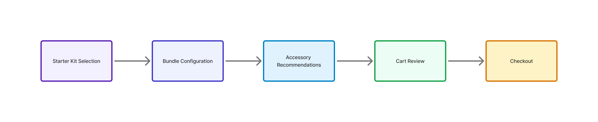
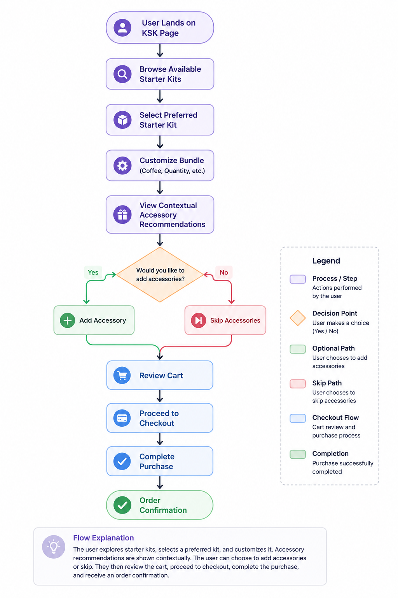

Redesigning the Starter Kit purchasing journey to improve bundle customization, accessory discoverability, and support future experimentation through a user-centered, responsive experience.
This case study has been adapted to respect client confidentiality. Certain deliverables including wireframes, high-fidelity designs, interactive prototypes, and implementation details have been intentionally omitted because the feature is currently under a NDA and has not yet been publicly released.
The content presented here focuses on my UX process, research, strategic thinking, collaboration, design decisions, and problem-solving approach rather than confidential business information or proprietary product assets.
I'm happy to discuss the complete design process, interaction flows, design rationale, and outcomes during interviews while respecting client confidentiality obligations.
Role: Senior UX Designer
Duration: 2026 – Present
Platform Desktop & Mobile
Type: E-commerce / Consumer Products
Team: Product Manager, Business Analyst, UX, Developers, QA, Marketing
Tools: Figma, FigJam, UserTesting.com, Optimizely, Jira
Keurig wanted to revisit the Starter Kit purchase experience after a previous accessory upsell experiment negatively impacted conversion. The objective was to redesign the flow so customers could easily customize their beverage starter kits while discovering relevant accessories in a way that felt helpful rather than disruptive. The project focused on balancing customer usability with business cross-sell goals while creating a scalable experience suitable for future experimentation and implementation.
Previous experimentation introduced an accessory selection step within the Starter Kit flow, resulting in increased abandonment and lower conversion.
Key challenges included:
The discovery phase focused on understanding business objectives, customer needs, previous experimentation, and technical constraints before defining the redesigned purchase experience.
Collaborated with cross-functional stakeholders to gather requirements, align business objectives, and understand customer purchasing behavior.
Previous experimentation provided valuable insights into customer behavior and highlighted opportunities to improve the purchasing experience without compromising business objectives.
To understand industry best practices, I reviewed bundle customization experiences across leading e-commerce platforms and analyzed how they guided users through product configuration while encouraging additional purchases without increasing friction.
Focus areas included:
The purchase journey was restructured to create a more intuitive and user-friendly experience while keeping accessory recommendations contextual rather than interrupting the primary purchase flow.

Instead of introducing mandatory accessory selections, recommendations were presented as contextual, optional add-ons, allowing users to continue their purchase journey with minimal friction while supporting business cross-sell objectives.
The purchase journey was designed to minimize friction while enabling users to customize their Starter Kit and optionally add relevant accessories.

Reduced cognitive load by presenting one decision at a time, allowing users to focus on completing each step before moving to the next.
Introduced accessories naturally within the purchasing journey instead of interrupting users with mandatory selections, supporting both usability and business cross-sell goals.
Displayed additional options only when relevant, helping users make informed decisions without overwhelming them.
Maintained a consistent experience across Desktop and Mobile while optimizing layouts and interactions for each device.
Designed a persistent order summary that helped users review their selections, pricing, and bundle configuration throughout the purchase journey.
Worked closely with cross-functional teams throughout the design lifecycle to align business objectives, customer needs, and technical feasibility while ensuring smooth implementation.
Previous accessory experiments introduced additional friction during the purchase journey, negatively impacting conversions.
Redesigned the experience using contextual, optional accessory recommendations instead of mandatory selections.
Created a smoother purchasing journey while supporting business cross-sell objectives.
Balance business cross-sell goals with customer usability without overwhelming users during bundle customization.
Applied progressive disclosure and contextual recommendations so users encountered additional options only when relevant.
Reduced cognitive load while maintaining a seamless, user-centered purchasing experience.
Design a scalable experience that could support future experimentation without requiring major redesign efforts.
Created reusable interaction patterns, modular layouts, and flexible components suitable for future A/B testing.
Delivered a scalable design framework that supports continuous optimization and future enhancements.
I owned the end-to-end UX design process, collaborating with cross-functional stakeholders to transform business requirements into intuitive, scalable, and user-centered experiences.